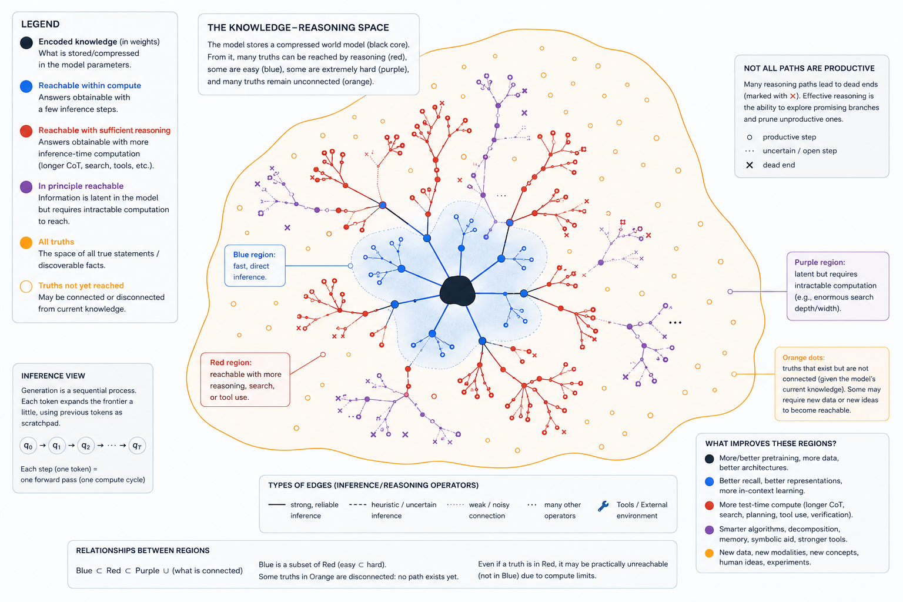

From a Guessing Game to the Loss of a Language Model, One Question at a Time
June 2026 · Cédric Caruzzo
TL;DR. Entropy, and everything stacked on top of it, derived as one chain that begins with a number-guessing game and ends at the loss function of a language model: guess a number → halve the space → log₂N questions → the bit → questions are a code → −log₂p per outcome → entropy → conditional entropy → cross-entropy & perplexity → KL divergence → forward vs reverse KL. Each link is the obvious next move once the last one clicks, and by the end an LLM's training loss is just bits per token, every piece of it something you could have invented yourself.
Before any math, let's play a game.
I chose a number between 1 and 100. Can you guess it? Try to ask the fewest questions you can. Each guess, I will only tell you whether my number is higher or lower.
If you find the strategy to solve this game intuitive, then you understand one of the most important principles of AI!
In all fairness, this is actually the cornerstone of information theory, rather than only AI.
Let's ask ourselves: what is the probability of picking the right number, given it was picked uniformly at random?
These are very low odds. You might also notice that a guess is not just a bid to be right; even a wrong one is informative, because it narrows what is left, and that narrowing is the thing we should really be measuring. Suppose you guess 71: what are the probabilities that my number is exactly 71, less than 71, or more than 71?
So how much does this guess actually buy us? Let's weight each outcome by how likely it is, and compute the expected number of numbers we still have to search through afterwards:
After one guess, we expect to have 57.41 numbers still left to check. We started with 100 and, on average, more than half are still on the table. For a single question, that is a poor return.
From this, we understand that what we want is a strategy that minimises the expected number left. And the equation we just wrote becomes handy. Instead of locking in 71, let's keep the guess as a variable $x$ and solve for the best one:
Step 1. Write the expected number left, weighting each outcome by its probability:
$$E(x) = \frac{1}{100}(0) + \frac{x-1}{100}(x-1) + \frac{100-x}{100}(100-x)$$Step 2. The first term is zero, and each remaining product is a square over 100:
$$E(x) = \frac{(x-1)^2}{100} + \frac{(100-x)^2}{100}$$Step 3. Put them over the common denominator:
$$E(x) = \frac{(x-1)^2 + (100-x)^2}{100}$$Now let's solve. This is a parabola in $x$, so its minimum is wherever the derivative is zero:
Step 1. Differentiate each square with the chain rule, $\;\frac{d}{dx}(100-x)^2 = -2(100-x)$:
$$E'(x) = \frac{2(x-1) - 2(100-x)}{100}$$Step 2. Set it to zero and multiply both sides by 100:
$$2(x-1) - 2(100-x) = 0$$Step 3. Divide by 2:
$$(x-1) - (100-x) = 0$$Step 4. Drop the parentheses, watching the signs:
$$x - 1 - 100 + x = 0$$Step 5. Collect terms:
$$2x - 101 = 0$$Step 6. Solve for $x$:
$$x = \frac{101}{2} = 50.5$$Since the number is a whole number, that means guessing 50 or 51: the middle. Plugging it back in, the expected number left drops to
Compare that to the 57.41 we got from guessing 71. The middle is the most informative guess we can make, because it splits the remaining numbers as evenly as possible: whatever answer comes back, we throw away half the space.
After that first guess, we are left with about 50 numbers and the exact same problem, just smaller. So we do the same thing again: ask the middle, halve it again. And again.
Look at what one guess in this game really is. You are never told the number. You are told one thing, higher or lower, and that is the most basic signal there is: a single yes or no. So every guess is a yes-or-no question. And we already know which one is best: the guess that splits what is left straight down the middle, because its answer is a coin flip that rules out half the remaining numbers no matter which way it falls.
The whole game is a chain of these yes-or-no splits, each one halving the numbers still in play. So the fewest questions we need is simply how many times we can halve 100 before a single number is left. And "how many times can I halve a quantity" is the exact definition of the base-2 logarithm:
So the answer is 6.64. But 6.64 what? 6.64 perfect, cut-it-in-half questions. And that should nag at you, because you cannot ask 0.64 of a question. A question is either asked or it is not, so the count has to be a whole number. In practice you round up and ask 7, which is always enough to corner the number. Yet the 6.64 is clearly telling us something real. It is not an arbitrary fraction either: six questions can only tell apart $2^6 = 64$ possibilities, which is not enough for 100, while seven can tell apart $2^7 = 128$, which is more than enough. The honest cost lives somewhere between 6 and 7.
So what does a fractional number of questions even look like? It is easiest to see on a smaller game, one we can draw in full. Below is the exact same halving strategy laid out as a tree. Each split sends the lower half left and the higher half right; follow any number down from the top and you read off the questions it costs. Slide the size of the game and watch the bottom edge.
Two things to notice. Land on a power of 2, like 8 or 16, and the tree is a perfect block: every number sits on the same bottom row, and log₂N is exactly a whole number. Step off it, and the bottom goes ragged. Some numbers get pinned down a row early, the rest need one more question, and the average always settles above log₂N. For 100 the very same raggedness happens between rows 6 and 7, which is the 6.64 we could not round away.
The tree puts a number on something else, too: how often you actually pay for that extra question. For 100, the deep row holds 72 of the numbers and the shallow row holds 28, so 72% of the time you end up asking the 7th question, and 28% of the time you are done at 6. Weigh those and the true average is $0.72 \times 7 + 0.28 \times 6 = 6.72$ questions.
That 0.72 is worth a second look, because it is not the 0.64 from $\log_2 100 = 6.64$. The 0.64 is the ideal, what one number in a hundred would cost if questions could come in fractions. The 0.72 is what you actually pay, nudged higher because the deepest numbers always come in pairs: every split sends two of them down, so the deep row holds an even count that slightly overshoots the ideal. The difference, $6.72 - 6.64 = 0.08$ of a question per game, is the waste: the toll for asking in whole questions, and it vanishes exactly when N is a power of 2.
This is the gap Claude Shannon closed in 1948. The thing that genuinely equals 6.64 is not a number of questions, it is an amount of information, and information has no reason to come in whole questions. Shannon gave it a unit: the bit. One bit is the information carried by a single perfect yes-or-no answer, the answer to a 50/50 question, and each 0 or 1 in the codewords above is exactly one bit. Measured that way, learning which of 100 equally likely numbers I picked is worth $\log_2(100) \approx 6.64$ bits. You round the questions up to 7, but the information was 6.64 bits all along.
We worked all of that out on paper. Now let's watch it hold up. We will pit the optimal halving strategy against a lazy baseline that splits the remaining range at a random point, run thousands of games of each, and watch the averages settle: halving just above the floor, around the 6.72 we predicted, the random baseline far above it.
Two things happen. The random baseline drifts up to around 8.4 questions per game, about a quarter more than it needs, because it keeps making lopsided cuts that barely shrink the space. Halving settles right around 6.7, and it never dips below the $\log_2(100)$ line.
That line is the real lesson. $\log_2(100)$ is not just what the best strategy happens to score, it is a floor that no strategy can beat. The best one presses right up against it from above, landing on the 6.72 we predicted, while the random baseline never comes close. The 0.08 between 6.72 and the floor is the same waste we already named: the toll for whole questions.
So we have our answer, and we have a unit for it. The cost of finding one outcome among 100 equally likely ones is about 6.64 bits. But we have been calling halving "optimal" on something close to faith. Before we ask what happens when the game is not fair, we should make sure we have really found the best possible strategy, and understand why nothing can beat it.
So far, we have come to halving as our best strategy, with empirical direction motivating it. But are there any better strategies?
Every time you play, the answers you collect are a string of yes-or-nos, which we have been writing as 0s and 1s. Trace any number down the tree and you get its string: in the game from 1 to 16, the number 11 comes out as 1010, the number 3 as 0010, and every number has its own. The string is enough to rebuild the number, too. Hand someone the bits 1010 and, walking the same tree, they land on 11 with nothing else to go on.
(A note for anyone who counts from zero: because our numbers start at 1, the codeword for the $k$-th number is the binary of $k-1$. So 0000 is the number 1, not 0, and the last bit flips the usual odd/even rule. Nudge your index by one and it all lines up; nothing in the argument depends on where we start counting.)
So the game was never really about questions. It was about encoding. The tree assigns every number a codeword, and reading off the codeword is the same as naming the number. A friend who knows the tree can take your bits and recover exactly what you meant.
Once you see it as a code, "best" finally has a precise meaning. The best strategy is the one that, on average, sends the shortest messages. So: is halving really the shortest code, or could something cleverer do better?
Suppose I asked you to encode the numbers 1 to 16 in bits. You would not draw a tree. You would just count in binary: 0000, 0001, 0010, all the way to 1111. Sixteen numbers, four bits each, done.
Here is the surprise: that is exactly the halving code. Slide the tree above to 16 and look. Every codeword is four bits, and they are the binary numerals in order. When the count is a power of 2, the obvious fixed-width encoding and the clever halving strategy are the same thing. You had already invented it.
The two only part ways when the count is not a power of 2. Slide the tree to 15. Fixed-width can do nothing clever: 15 still needs 4 bits, because 3 bits can only address 8 things, so every number costs 4. But halving hands a 3-bit codeword to one of the numbers and 4 bits to the rest, averaging 3.93. It compresses, by refusing to spend a bit it does not need.
How far can that go? The two codes agree on every number but the last, so the whole saving is hiding in what happens to 15:
1110, holding it apart from a sixteenth number (1111) that never arrives, while halving sees that slot is empty and drops the final bit, leaving 111. That one struck bit is the entire difference between the codes.Averaged over all fifteen numbers, that single saved bit is the whole story, and it lands just shy of the information floor:
Halving claws back almost all of the slack that fixed-width wastes, and stops right before the floor, that last 0.02 being the same integer-codeword tax we have already met. (You can chip at it by bundling several numbers into one codeword, but that is a story for another day.)
But 15 was the 'worst' case in its range: only one number sat shallow enough to save a bit. Swing to the other extreme, to just above a power of 2, and observe. Here is 1 to 9:
That is nearly the whole bit saved on nearly every number. Fixed-width still costs a flat 4.00 bits; halving averages 3.22, against a floor of $\log_2 9 \approx 3.17$.
Either way, halving beats the naive encoding. But beating the naive code is a low bar. Could some genuinely clever code beat halving?
Think about what a code's output stream looks like. If there is any pattern in it, any way to guess the next bit better than a coin flip, then that pattern is redundancy: you could write a shorter code that spends nothing on the part you could already predict. A stream you can compress is a stream from a code that was not yet optimal.
Turn that around. The optimal code is the one whose output you cannot compress, because there is no pattern left to exploit. Its bits look like fair coin flips: each one equally likely 0 or 1, independent of the last, every block as common as every other. The endpoint of squeezing all the redundancy out of a message is something indistinguishable from noise.
Structure is exactly what compression feeds on. A message you can shorten still has predictability left in it. When nothing can shorten it any further, what remains looks completely random, which is why a perfectly encoded message and pure noise are impossible to tell apart.
And halving is precisely the strategy that produces this. Every question splits the live numbers in half, so every answer is a genuine 50/50, a fair coin, carrying a full bit and revealing nothing you could have guessed in advance. A lazy question (is it in the bottom quarter?) has a lopsided answer you can half-predict, and a predictable answer is a half-wasted one. That is the whole reason halving wins: it is the only strategy that never spends a fraction of a question on an answer you already saw coming.
There is a hard floor underneath the intuition, too. A single yes-or-no answer can carry at most one bit. Identifying one number out of $N$ equally likely ones takes $\log_2 N$ bits. So no strategy, however clever, can use fewer than $\log_2 N$ questions on average. Halving extracts a full bit from every even split, so it presses right up against that floor, and nothing can do better.
The picture catches the gross cases, but the eye is a blunt instrument. A mildly off-center strategy wastes only a little, and its square would still look like static. To catch waste too small to see, we stop looking and start counting.
Let's test it. Take a strategy, play it thousands of times on the game from 1 to 16, and string all the yes-or-no answers into one long ribbon of bits. Then count: how often is each bit 0 versus 1? How often does each pair (00, 01, 10, 11) appear? Each triple? If the code is optimal, every pattern should show up equally often, because the stream is meant to look like fair coins. If the strategy wastes questions, the counts will lean.
The optimal code's bars sit flat on the line: every pattern equally likely, no structure, nothing to compress. Push to off-center and the bars start to lean. Push to guess low and they collapse into a heap of 1s, an answer so predictable it is barely worth asking. That lean is the redundancy, and the readout above turns it into a number: a full bit per answer when the code is perfect, less and less as the waste grows.
Mathematicians have a name for the flat case. A sequence in which every block of length $k$ appears with frequency $1/2^k$ is called normal (the idea is Borel's, 1909), and the output of a perfect code is normal in exactly this sense. One honest wrinkle ties it back to where we began: run optimal halving on 100 rather than a clean power of 2, and the bars come out almost flat, with a faint lean that will not go away. That faint lean is the 0.08 of a wasted bit, the very same residue, now wearing the disguise of a pattern you could still compress. A non-round number of bits and a not-quite-normal output are one fact seen from two sides.
We have one more thing to harvest, and it is the key to everything that follows. All along, the length of a codeword has been shadowing a probability. A codeword that is $n$ bits long singles out one message among $2^n$ equally likely ones, so the chance of any particular $n$-bit message is
Read it backwards to get the length from the probability:
Step 1. Take the base-2 log of both sides:
$$\log_2 p = \log_2 2^{-n} = -n$$Step 2. Flip the sign:
$$n = -\log_2 p$$So an outcome that happens with probability $p$ costs $-\log_2 p$ bits to name. That single formula is the whole game. Check it against everything we have done: one number out of 100 equally likely ones has $p = 1/100$, so it costs
which is exactly the number we started with. Our entire story so far has been the special case where every outcome shares the same probability $1/N$, handing every outcome the same price $\log_2 N$.
Step back and look at what we have built, because it is the whole foundation. A bit is the answer to one maximally informative question, and a question is most informative exactly when you are most uncertain of its answer: when it is framed so that yes and no are equally likely, each with probability one-half. That coin-flip question is worth a full bit. Tilt the odds and the answer turns partly predictable, so it pays out less. The bits it takes to pin something down are just the count of those balanced questions, and an outcome of probability $p$ takes exactly $-\log_2 p$ of them.
And that last formula asks only about a single outcome's own probability; it never counts how many outcomes there are, and never insists they be equally likely. We have only ever used it on fair games, where every outcome shares the same $p = 1/N$.
The buildup to what a bit is, and why it is the same thing as information, may have felt long. That was deliberate. The goal so far was to make the idea intuitive and to turn it over in the hand, to see it from the game, from the code, from the noise. From here we can move fast. Everything that follows falls straight out of that one idea, and if each step lands as the obvious next thing, the slow start did its job.
By now one claim should sit comfortably: a bit is a unit of information, and information is a measure of compression. But every example so far has been a fair, uniform draw, every outcome equally likely. Two questions are left hanging:
We already hold the answer; we just have to read it off. An outcome of probability $p$ costs $-\log_2 p$ bits to name, and that one rule is the entire bridge from probability to compression: a common outcome (large $p$) is cheap, a rare one (small $p$) is expensive. Lay the probabilities out as areas and you can see it at a glance. The wide blocks, the things that happen often, get the short codes.
0 (object A) claims the whole left half, 10 (B) a quarter, 110 and 111 (C, D) an eighth each. The braces read off the width of each region, which is its probability; the depth, the number of bits, is its cost. A length-$L$ codeword owns $1/2^L$ of the tree, so the more likely the object, the wider its block and the shorter its code.Nothing here was special about a guessing game. Strip away the story and what is left is a source: it emits objects $x$ from some set, each with its own probability $p(x)$, and a message is just a sequence of them, $x_1, x_2, x_3, \ldots$. Pixels in an image, letters in a sentence, states of the weather. Anything that carries a probability is information, and anything that is information can be compressed and sent. The cost of one object is its surprise, $-\log_2 p(x)$, whatever the object is and however many others there are.
Notice the word we keep leaning on: expect. We are not asking what one particular object costs, we are asking what it costs on average, per object, across a sequence. That is an expectation.
If you have met the entropy formula before and found it opaque, this is the form that makes it click:
Read it as plain words. The inside, $-\log_2 p(X)$, is the bit cost of whatever object we happen to draw. The $\mathbb{E}[\cdot]$ averages that cost over the source. To take the average, weight each object's cost by how often it turns up, and sum over every object:
That is entropy: a weighted average of the bit cost of each outcome, weighted by how often you actually see it. The common outcomes are cheap to name and dominate the sum because they happen so much; the rare ones are costly but seldom. The number that comes out is the average bits per object, and, exactly as before, it is a floor: the fewest bits, on average, that any code can spend to send one draw from this source.
And it contains everything we did. A fair game over $N$ outcomes has $p(x) = 1/N$ for every $x$, so every cost is the same, $-\log_2(1/N) = \log_2 N$, and the average of a constant is just that constant: $H = \log_2 N$. The uniform case was never a different rule. It was only the special case where every term in the sum agrees.
We talk about bits, information, and entropy, but once again a major assumption has been hiding underneath: each event is independent. Now, I work on AI for a living, and if that is your world too, your mind is probably already jumping to LLMs. An LLM works autoregressively, and it is not only LLMs: in most settings where you want compression, there is dependence. A letter conditions the probability of the next one, and so does a word, a sentence, a pixel, a token.
So we no longer formalize only as $p(x)$, but as $p(x \mid \text{context})$, the conditional probability of $x$ given an existing context: a single letter, a word, a prompt. The surprise of the symbol that actually arrives is what it always was, its negative log probability, only now conditioned on the past:
When the context makes the symbol obvious, that surprise collapses. The u after a q has $p \approx 1$, so $-\log_2 p \approx 0$: it costs almost nothing to send, because you already knew it was coming. A whole sequence factorizes into these one-step predictions, each conditioned on its past, which is just the chain rule of probability:
where $x_{<t}$ is shorthand for everything before position $t$.
Average that one-step cost and you get the conditional entropy, the entropy of the next symbol given its history:
And here is the fact that makes memory worth having: conditioning never hurts. On average, knowing the past can only lower your uncertainty about what comes next, so $H(X_t \mid X_{<t}) \le H(X_t)$. English taken letter by letter, as if each were independent, costs around four bits each; let the context speak and Shannon estimated the true figure at closer to one bit per letter. Something like three quarters of written English is, in this exact sense, redundant: already implied by what came before.
You might have noticed we keep talking about a probability distribution $p$, but we also keep mentioning LLMs, and an LLM is only an approximator of the true language distribution. It never has $p$. This is why we introduce $q$, the learnt distribution, which tries to approximate $p$. And entropy, we saw, is built on $-\log_2 p$. So how do we calculate the entropy through our approximation $q$?
The real question is what it costs to compress with the wrong distribution: a code built for $q$ when the data actually comes from $p$. The answer is the natural one. You give each symbol the length your model thinks it deserves, $-\log_2 q(x)$ bits, but the symbols arrive with their true frequencies $p(x)$. So you average the $q$-cost over the real distribution $p$:
This is the cross-entropy: the average bits you spend encoding a source $p$ with a code meant for $q$. It is entropy with one factor swapped. The weight $p(x)$ is reality, how often a symbol really shows up; the cost $-\log_2 q(x)$ is the model's belief about it. When the model is right, $q = p$, and it collapses back into plain entropy. When it is wrong, the swap makes you pay.
For a language model this is the pretraining loss, nothing more. The model reads the context, predicts a distribution $q(x_t \mid x_{<t})$ over the next token, and pays $-\log_2 q$ on whatever token actually comes next; averaged over the data, that is the cross-entropy the optimizer drives down. (In practice the loss is reported in nats, using the natural log in place of $\log_2$; that only rescales everything by a constant factor of $1/\ln 2$, so every bit of intuition here carries over untouched.) Exponentiate it and you get perplexity, $2^{H(p,q)}$, the effective number of equally likely tokens the model is torn between at each step. A perplexity of 8 is as unsure as a fair eight-sided die.
A note on perplexity. Run the same computation the other way and it hands you an intuitive read on the difficulty of the task itself.
Say I am compressing one token sampled from a 100,000-word vocabulary. If the model estimates that token at 3 bits, then $2^3 = 8$ says that, as far as the model is concerned, the 100,000 options have shrunk to a choice among 8.
Now average it over the model's answers. Say the cross-entropy is 4.3 bits per token. Then $2^{4.3} \approx 19.69$: for each autoregressive step, the model is effectively branching among about 20 possible next tokens.
That is perplexity, $2^{H}$. You may wonder why we bother, since the bits already carry the same insight. The log scale is the better place to compute, surprises add instead of multiplying, but a linear count, "about 20 choices", is far easier for a human to feel than "4.3 bits".
A question follows naturally: how many extra bits am I paying, on average, for using $q$ instead of the true $p$? That is exactly what the KL divergence, $D_{\mathrm{KL}}(p \,\|\, q)$, answers.
If you have run into it before, you have probably seen it raw:
which can look opaque. Why a ratio of probabilities? Why an expectation of a log ratio? Build it back up with three questions.
First: if nature draws from $p$ and you know $p$, how many bits do you spend on average?
Second: what if you only have your model $q$?
Third: how much extra are you paying for using $q$ instead of $p$? Just subtract:
And suddenly KL is not some mysterious distance-like quantity. It is, literally, the expected wasted bits from holding the wrong model of reality. And since the true code is the cheapest one there is, the wrong code can only ever cost you more, never less: those wasted bits are always at least zero, $D_{\mathrm{KL}}(p \,\|\, q) \ge 0$, with equality exactly when $q = p$. (That is Gibbs' inequality, and it is the reason cross-entropy can never dip below entropy.)
It also shows cleanly why KL is a divergence and not a distance: it is asymmetric, $D_{\mathrm{KL}}(p \,\|\, q) \ne D_{\mathrm{KL}}(q \,\|\, p)$. In the compression reading, that asymmetry is the natural thing, not a defect. $D_{\mathrm{KL}}(p \,\|\, q)$ asks: reality is $p$, I built my code from $q$, how many extra bits do I waste? Whereas $D_{\mathrm{KL}}(q \,\|\, p)$ asks: if the samples were actually drawn from $q$, how many extra bits would a code built for $p$ cost?
The deeper reason they differ is that the measure you average against changes. Compare:
The first asks: where does reality spend its probability mass, and how wrong is my model there? The second asks: where does my model spend its mass, and how wrong am I there?
And this hands you a surprisingly deep reading of machine learning itself. Maximum likelihood training is the same thing as minimizing cross-entropy, which (because $H(p)$ is fixed) is the same thing as minimizing KL:
So when we train a language model with the cross-entropy loss, we are doing exactly one thing: finding the model that wastes the fewest extra bits when compressing reality.
The divergence we just built, $D_{\mathrm{KL}}(p \,\|\, q)$, has a name: forward KL. Flip the arguments and you get its mirror, $D_{\mathrm{KL}}(q \,\|\, p)$, the reverse KL. We already saw they ask different questions, one weighted by reality $p$, the other by the model $q$. In machine learning that gap runs deep, and it shows up under two names: mean-seeking and mode-seeking.
Picture a target $p$ with two separated modes, and a model $q$ that can only be a single bump, one Gaussian. It cannot be in two places at once, so it has to choose, and the two divergences make it choose differently.
Forward KL is mean-seeking, or mass-covering. It averages over $p$, so it weighs every place $p$ puts mass. Wherever $p$ is large and $q$ is near zero, the ratio $p/q$ explodes and the penalty is huge: forward KL will not tolerate leaving any of $p$ uncovered. A single Gaussian facing two modes is therefore forced to stretch across both and drop its mean in the middle, covering them even at the cost of piling probability into the empty valley between. This is exactly maximum likelihood, the cross-entropy we have been minimizing all along, which is why a model trained this way never assigns near-zero probability to something the data actually does.
Reverse KL is mode-seeking, or zero-forcing. It averages over $q$, so it only feels where the model itself puts mass. Wherever $q$ is large and $p$ is near zero it pays a lot, so $q$ refuses to sit where $p$ is empty, the valley included. But it is never punished for ignoring a mode: where $q \approx 0$, the term $q \log(q/p)$ vanishes whatever $p$ does there. So the cheap move is to abandon the harder mode, collapse onto one, and sit there sharply, and given the choice it climbs the taller mode, where $p$ is highest.
It helps to hear what each one is shouting.
Underneath, the two punish opposite mistakes. $D_{\mathrm{KL}}(p \,\|\, q)$ asks "how surprised is my model when reality happens?", so it hates false negatives: missing a true mode is catastrophic, which is the slogan do not miss anything important. $D_{\mathrm{KL}}(q \,\|\, p)$ asks "how often does my model predict things reality does not support?", so it hates false positives: putting mass on implausible regions is catastrophic, the slogan do not make claims you cannot justify.
This is exactly why maximum likelihood minimizes $D_{\mathrm{KL}}(p \,\|\, q)$ (up to a constant), while variational inference often minimizes $D_{\mathrm{KL}}(q \,\|\, p)$. And it explains behaviors you have probably seen:
The famous mode collapse is essentially reverse-KL-like behavior: the model would rather commit to one plausible explanation than spread probability through unlikely regions.
Tie it back to compression and the asymmetry stops being mysterious. Forward KL is
literally the extra bits you waste encoding reality with the model's code: reality is what gets sampled. Reverse KL is
the extra bits you would waste if the model's own predictions were the data, encoded with reality's code. A stranger question to ask out loud, but it pins down the whole thing: the averaging now happens where $q$ lives, not where $p$ lives. The left-hand argument chooses where you look, and once you see that, mass-covering versus mode-seeking is almost inevitable.
We started with a number between 1 and 100, and we have ended at the loss function of a language model. Look back at the path, and notice that nothing in it was a leap. The game taught us to halve the search space, and "how many times can I halve" is exactly $\log_2 N$. The yes-or-no question worth a full bit is the unit of that count, and a bit, it turned out, is information. Those questions were secretly a code, and a code charges $-\log_2 p$ bits for an outcome of probability $p$. Average that price over a source and you have entropy. Let the next symbol lean on the ones before it and you have conditional entropy. Measure it through an imperfect model $q$ and you have cross-entropy, the training loss itself, with perplexity as its human-readable face. The bits you waste because $q$ is not $p$ are the KL divergence, and which way you point that divergence is the whole difference between covering every mode and committing to one.
None of it was handed down. Entropy was never a formula to memorize; it was the answer to a single question, how few questions do I need, and every concept after it was the answer to the next obvious one. The whole tower, information, entropy, cross-entropy, perplexity, KL, the objective every language model is trained to minimize, is built from a guessing game and a willingness to keep asking "and then what?". You could have invented all of it yourself. Now you have.
This last part is a bonus, more speculation than result, and it is the question that pulled me into writing all of this in the first place. So read it as thinking out loud.
You have seen the take a hundred times: an LLM is just a fancy next-token predictor. True, and we just spent a whole post showing that next-token prediction is cross-entropy is compression. What I almost never see said is the consequence. An LLM is a compression and decompression machine, and the autoregressive loop is the decompression: it unrolls the compressed knowledge one token at a time. And the compression is genuinely staggering, something close to the written knowledge of humanity folded into a few terabytes of weights for the largest models.
Which leaves a question I keep turning over. If a model is, at heart, a compressor of its training data, how could it ever solve a problem that was never in the data, say an open Erdős conjecture, from nothing but the statement?
Here is what people underrate about compression. A dumb compressor, gzip and friends, hunts for surface redundancy: the word prime repeated, a phrase that recurs, and it stores the repeat once. A model minimizing cross-entropy is doing something else entirely. To predict the next token of a number-theory paper as cheaply as possible, the most efficient move is to discover the rules that generate the mathematics. The slogan I have come to believe is that the best compression is understanding.
If you truly understand Newtonian mechanics, you can compress a mountain of orbital observations into a few equations plus initial conditions. If you understand group theory, thousands of theorems collapse into a handful of principles. Try to compress every chess game ever played: you can memorize them, or you can discover material, position, tactical motifs, and endgames, and the second compresses far better. When the data is generated by some latent structure, finding that structure is the optimal compression. This is the old idea sitting under Solomonoff induction, Minimum Description Length, and Kolmogorov complexity: the shortest description of the data is usually the one that predicts it best.
So back to the hard question. The model is asked for a proof whose solution is nowhere in its training set. Two things can be true.
Either the proof is already latent in the compressed representation. The model has folded combinatorics, graph theory, additive number theory, and a kit of proof techniques into internal abstractions, and the proof exists as a recombination of pieces it already holds. Then producing it is just decompression: you hand it the statement and it unfolds the latent structure into a candidate proof.
Or the proof needs genuinely new information that the training data never constrained. Then no amount of decompression helps. You cannot decompress what was never compressed in. A zip file will not give you a Shakespeare play it never stored.
The catch, and the reason this is not a clean dichotomy, is that an LLM is not a zip file. It does not store bytes, it stores regularities, abstractions, algorithms, relationships. So its decompression can produce combinations that were never explicitly in the data, the same way understanding group theory lets you state a theorem nobody ever showed you. Where exactly the line falls between "recombination of the latent" and "genuinely absent" is, as far as I can tell, something nobody knows how to draw yet.
And this is where reasoning sneaks in. Cross-entropy minimization rewards any internal computation that improves prediction. If discovering an invariant helps predict the next line of a proof, gradient descent is pushed to learn that invariant. If a little search helps, it is pushed toward search; if a theorem-proving heuristic helps, the same. Reasoning is not bolted on afterwards, it emerges because reasoning is itself a compression mechanism. A proof that replaces a thousand special cases with one general principle is, literally, a shorter description. Science is doing MDL, and so, in its own way, is the model.

There is a second constraint hiding here, and it is the part I find most interesting. A statement can be reachable in principle from what the model knows and still be out of reach in practice, because the path to it is too long. Knowledge and search are different axes. That is the difference between information complexity and computational complexity: asking whether a given chess position is a forced win needs one bit of answer, yes or no, but a staggering amount of computation to produce that bit.
And here autoregression bites hard. The weights are fixed at inference, and the model gets exactly one forward pass per token. There is no way to run ten decompression cycles inside a single token. The only scratchpad it has is the text it has already written, so the true compute budget is not one forward pass, it is the number of generated tokens times the work per pass. This is why chain-of-thought works at all. Letting the model write five hundred tokens of reasoning instead of twenty buys it roughly twenty-five times the computation, and it spends that compute feeding its own partial results back into itself. Chain-of-thought is iterative decompression: unfold a little, read what you wrote, unfold further.
This is the blue region in the figure, sitting inside the red: what is reachable within the compute you can actually spend. The model may know enough to derive a result and still not have the inference budget to walk the path to it, and the figure keeps a separate purple region for the extreme of this, things latent in the weights but needing computation so large they are effectively out of reach. The practical frontier is often not the boundary between the trained and the reachable, but the one between reachable-in-principle and reachable-in-budget. That, I think, is why test-time scaling keeps paying off without touching the weights: chain-of-thought, tree search, self-consistency, tools, none of them add knowledge, they enlarge the blue region inside the red. Pretraining decides what is compressible into the model; inference decides how much of it you can unfold before the budget runs out. Two separate bottlenecks.
There is one more idea I cannot let go of. To compress humanity's knowledge well, a model cannot store answers. There are too many of them and they are too redundant. It has to find a small set of latent variables, principles, generators, from which the answers can be rebuilt. I have started thinking of these less as canonical answers and more as canonical questions.
Put some rough numbers on it, because the gap is the whole argument. The largest models are a trillion-ish parameters, a few terabytes of weights once you store them. That already dwarfs things we think of as enormous: all of English Wikipedia is only tens of gigabytes of text. But it is tiny against the full record. Every book humanity has ever written is on the order of a hundred terabytes of raw text, and the web crawls these models train on run into the petabytes. The weights sit one to three orders of magnitude below the material they have to account for. And even if you squeezed all those books down to Shannon's one bit per character, the floor we met earlier, they would still come to ten or twenty terabytes, larger than the model itself. There is no room to keep the answers. The numbers only close if the model throws away the specifics and holds onto the structure that can regenerate them.
A physicist compressing planetary positions does not store the positions, they store Newton's laws and the initial conditions and reconstructs the rest. The real find was the question, "what law generates these observations?", not the table of numbers. Shown $2, 4, 6, 8, 10$, the compressive move is not the list but the hypothesis $x \mapsto 2x$, which stands in for infinitely many lists. A good world model, I suspect, stores far less "the capital of France is Paris" than it stores reusable axes of explanation, cause and effect, optimization, equilibrium, conservation, symmetry, search, recursion, and reconstructs the specific answer on demand.
This loops straight back to where we have been. Entropy, $H(X) = \mathbb{E}[-\log_2 p(X)]$, is uncertainty, and the most powerful way to cut uncertainty across a whole domain is not to memorize its facts but to find the few variables that explain all of them at once. A scientific law is an enormous entropy reducer. It even predicts something we actually observe: models look smartest exactly where the surface data is huge but the generating principles are small and clean, mathematics, physics, code, logic, and shakiest where the knowledge is a pile of arbitrary facts with no compressing structure underneath.
I will take the cliche and bend it. "An LLM is just a next-token predictor" is true in the same way that "a mathematician is just a neuron-firing predictor" is true. It names the mechanism and hides everything interesting. The next-token objective is the mechanism. The compression of the world's regularities is where the capability comes from. And the part still genuinely open, the part I would love an answer to, is how far that compression, unrolled with enough inference-time computation, can reach toward knowledge that nobody has written down yet.
In the main text we watched the random-split baseline settle at about 8.4 questions per game, while the optimal halving strategy hugged the $\log_2(100) \approx 6.64$ floor. Here is where that 8.4 comes from.
Let $E(N)$ be the average number of yes-or-no questions the random-split strategy needs to pin down a number drawn uniformly from $N$ equally likely candidates. An interval of size one is already solved, so $E(1) = 0$.
Each question picks a split point at random, cutting the $N$ candidates into a left part of size $k$ and a right part of size $N-k$. Because the split point is uniform, $k$ is equally likely to be any of $1, 2, \ldots, N-1$. The secret is uniform over the $N$ candidates, so it falls in the left part with probability $k/N$ and the right part with probability $(N-k)/N$, and it stays uniform inside whichever part it lands in. That gives a recurrence:
Step 1. One question, then recurse into the side holding the secret, averaged over the uniform split point $k$:
$$E(N) = 1 + \frac{1}{N-1}\sum_{k=1}^{N-1}\left[\frac{k}{N}\,E(k) + \frac{N-k}{N}\,E(N-k)\right]$$Step 2. As $k$ runs over $1, \ldots, N-1$, so does $N-k$, so the two sums are identical and collapse into one:
$$E(N) = 1 + \frac{2}{N(N-1)}\sum_{k=1}^{N-1} k\,E(k)$$The sum is annoying, but it disappears with a standard trick: write the identity for $N$ and for $N-1$, then subtract.
Step 1. Clear the denominator in the relation above:
$$N(N-1)\,E(N) = N(N-1) + 2\sum_{k=1}^{N-1} k\,E(k)$$Step 2. The same identity, one size down:
$$(N-1)(N-2)\,E(N-1) = (N-1)(N-2) + 2\sum_{k=1}^{N-2} k\,E(k)$$Step 3. Subtract. The two sums differ by their single top term $(N-1)E(N-1)$, so everything telescopes:
$$N(N-1)E(N) - (N-1)(N-2)E(N-1) = 2(N-1) + 2(N-1)E(N-1)$$Step 4. Divide by $(N-1)$ and collect the $E(N-1)$ terms:
$$N\,E(N) = N\,E(N-1) + 2 \quad\Longrightarrow\quad E(N) = E(N-1) + \frac{2}{N}$$So adding one more candidate raises the cost by exactly $2/N$. Starting from $E(1) = 0$ and summing these increments up to $N$:
Plugging in $N = 100$, with $\mathcal{H}_{100} \approx 5.187$:
That is the orange line in the simulation. Compare it to what an optimal player spends, about 6.7 questions, which can never beat the $\log_2(100) \approx 6.64$ floor: random splitting costs roughly a quarter more for the very same answers. It is not catastrophic, just persistently wasteful, because a random cut is rarely the 50/50 cut that would buy a full bit. As a sanity check, the formula gives $E(2) = 2(\mathcal{H}_2 - 1) = 1$ and $E(3) = 2(\mathcal{H}_3 - 1) = \tfrac{5}{3}$, both of which you can confirm by hand.